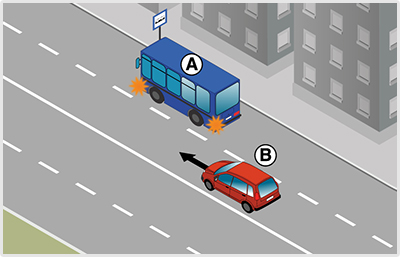
- 305. Ön a ’B’ jelű személygépkocsit vezeti. Van-e valamilyen kötelezettsége, ha azt látja, hogy a buszmegállóból az ’A’ jelű autóbusz el kíván indulni? #703748
- Nincs, mivel az autóbusz az elindulás után be tud sorolni a jobb szélső forgalmi sávba.
- Igen, lassítással, szükség esetén megállással is lehetővé kell tennie az autóbusz behajtását a belső sávba.
- Igen, intenzív fékezéssel lehetővé kell tennie az autóbusz sávváltását.
- 306. A ’B’ jelű személygépkocsi vezetője milyen módon köteles lehetővé tenni az ’A’ jelű autóbusz buszmegállóból történő elindulását lakott területen? #703749
- Itt az autóbusz segítség nélkül is be tud kapcsolódni a forgalomba.
- Lassítással, szükség esetén megállással.
- Akár hirtelen fékezéssel is.
- 307. Az ’A’ jelű autóbusz vezetője számíthat-e arra, hogy az érkező ’B’ jelű személygépkocsi vezetője lehetővé teszi a belső sávba történő besorolást? #703750
- Nem.
- Igen.

- 308. Melyik irányban haladhat el az ábrán látható járdasziget mellett, ha az az úttest menetirány szerinti jobb és bal oldalát választja el egymástól? #703800
- Csak jobbról, a ’B’ jelű nyomvonalon.
- Csak balról, az ’A’ jelű nyomvonalon.
- Útiránytól függően akár az ’A’, akár a ’B’ jelű nyomvonalon.
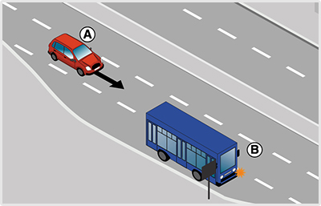
- 309. Ön lakott területen az ’A’ jelű járművet vezeti. Válassza ki a helyes állítást! #704116
- Lehetővé kell tennie a megállóból elinduló ’B’ jelű autóbusz besorolását az Ön által használt forgalmi sávba.
- Nem köteles lehetővé tennie a megállóból elinduló 'B' jelű autóbusz besorolását az Ön által használt forgalmi sávba.
- Elsőbbséget kell adnia a megállóból elinduló ’B’ jelű autóbusz részére.
- 310. Ön lakott területen az ’A’ jelű személygépkocsit vezeti. Van-e valamilyen kötelezettsége, ha azt látja, hogy a ’B’ jelű autóbusz el kíván indulni a megállóhelyről? #704117
- Igen, lassítással, szükség esetén megállással is lehetővé kell tennie az autóbusz elindulását.
- Nincs, mivel az autóbusz többsávos útra kíván ráhajtani.
- Igen, be kell állni az autóbusz mögé a megállóhelyre, ezzel is elősegítvén az autóbusz elindulását.
- 311. Milyen módon köteles lehetővé tenni az ’A’ jelű személygépkocsi vezetője lakott területen a ’B’ jelű autóbusz elindulását az autóbusz-megállóból? #704118
- Lassítással, szükség esetén megállással is.
- Az autóbusz-megállóba történő beállással.
- Akár hirtelen fékezéssel is.
- 312. Mikor számíthat arra a ’B’ jelű autóbusz vezetője lakott területen, hogy az érkező ’A’ jelű személygépkocsi lehetővé teszi az elindulását? #704119
- Ha elindulási szándékát jelzi az irányjelzővel.
- Ha az ajtaját becsukja.
- Amikor beáll a megállóhelyre.
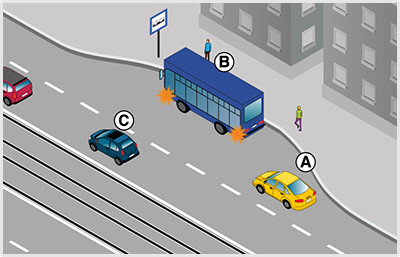
- 313. Mikor köteles az ’A’ jelű jármű a ’B’ jelű autóbusz elindulását lehetővé tenni? #704135
- Csak akkor, ha ezt hirtelen fékezés nélkül meg tudja tenni.
- Minden esetben, még hirtelen fékezés árán is.
- Soha nem köteles lehetővé tenni.
- 314. Ön az ’A’ jelű gépkocsit vezeti. Van-e valamilyen kötelezettsége, ha azt látja, hogy a ’B’ jelű autóbusz el kíván indulni a megállóhelyről? #704136
- Igen, lassítással, szükség esetén megállással is lehetővé kell tennie az autóbusz elindulását.
- Nincs, mivel az autóbusz olyan útra kíván ráhajtani, amelyen van villamospálya.
- Nincs. Lassítás nélkül folytathatja útját, mivel az elinduló járművek kötelesek elsőbbséget adni az érkezők részére.
- 315. Milyen módon köteles az ’A’ jelű személygépkocsi vezetője lehetővé tenni a ’B’ jelű autóbusz elindulását a megállóhelyről? #704137
- Lassítással, szükség esetén megállással.
- Csak lassítással.
- Akár hirtelen fékezéssel is.
- 316. Az úttest széléről elinduló jármű vezetője köteles az úttesten haladó... #704346
- járművek és gyalogosok részére elsőbbséget adni.
- járművek és gyalogosok zavarásától tartózkodni.
- 317. Amikor járművével egy várakozóhelyről az úttestre kíván ráhajtani, akkor... #704347
- az úttesten haladó járművek részére köteles elsőbbséget adni.
- az úttesten haladó járművek kötelesek Önnek elsőbbséget adni.
- az úttesten haladó járművektől elvárható az udvariasság.
- 318. Elsőbbsége van-e a zárt pályáról az úttestre ráhajtó villamosnak az úttesten közlekedő járművekkel szemben? #704348
- Igen.
- Nincs elsőbbsége.
- 319. Köteles-e irányjelzéssel jelezni az úttest széléről történő, irányváltoztatással nem járó elindulást? #704349
- Igen, minden esetben.
- Nem
- 320. Hol kell lehetővé tenni az elindulási szándékot jelző, menetrend szerint közlekedő autóbusznak a megállóhelyről való elindulását? #704350
- Csak lakott területen.
- Csak lakott területen kívül.
- Lakott területen és lakott területen kívül egyaránt.
- 321. Válassza ki, hogy az alábbiak közül mely jármű elindulását köteles lakott területen lehetővé tenni? #704351
- A megállóhelyről elinduló iskolabuszét.
- A telephelyről kiinduló figyelmeztető jelzést használó autóét.
- A taximegállóból kiinduló taxiét.
- 322. Lakott területen a megállóhelyről egy gyermekeket szállító autóbusz kíván elindulni. Ha ez hirtelen fékezés nélkül megtehető, köteles-e az elindulását lehetővé tenni? #704352
- Igen.
- Nem, mert ez csak a menetrend szerinti autóbusz esetén kötelező.
- 323. Milyen módon kell lehetővé tenni a lakott területen lévő megállóhelyen tartózkodó, elindulási szándékát jelző autóbusz elindulását? #704353
- Lassítással, szükség esetén megállással
- Kizárólag csak lassítással.
- Minden esetben megállással.
- 324. Milyen módon kell lehetővé tenni az elindulási szándékot jelző, menetrend szerint közlekedő autóbusznak a lakott területen lévő megállóhelyről való elindulását? #704354
- Lassítással, szükség esetén megállással.
- Sebességcsökkentés nélkül.
- Akár hirtelen fékezéssel is.
- 325. Alkalmazni kell-e a jobbratartás szabályait körforgalmú úton történő közlekedés során? #715001
- Igen.
- Nem.
- 326. Köteles-e eleget tenni jobbratartási kötelezettségének, ha járművével egyirányú forgalmú úton közlekedik? #715004
- Igen.
- Nem.
- 327. Az úttest szélén lassító sáv található. Köteles-e járművével a jobbratartás értelmében itt közlekedni? #715007
- Nem.
- Igen, ha a jármű vezetője túl lassan halad.
- Igen, minden esetben.
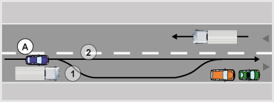
- 328. A képen látható járművek az úttest szélén 15-20 méter távolságra várakoznak egymástól. Az ’A’ jelű személygépkocsi a megengedett legnagyobb sebességgel haladva szabályosan közlekedik a ’2’ jelű nyomvonalon? #715108
- Igen.
- Nem, mert a jobbra tartásnak megfelelően ilyen kis távolságban is köteles az úttest szélére húzódva közlekedni.
- Nem, mert minden esetben az ’1’ jelű nyomvonalon kell közlekednie.
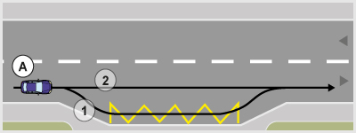
- 329. Ön az ’A’ jelű személygépkocsit vezeti. Válassza ki a helyes állítást! #715110
- A ’2’ jelű nyomvonalon szabályosan halad.
- Csak az ’1’ jelű nyomvonalon való haladása szabályos.
- Az ’1’ jelű nyomvonalon csak akkor halad szabályosan, ha az utasa erre megkéri.
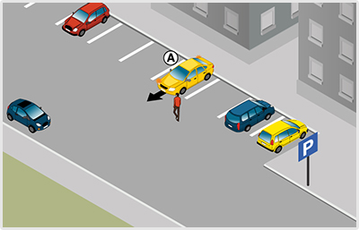
- 330. Az ’A’ jelű személygépkocsi várakozóhelyről kíván elindulni. Mikor kell az irányjelzőt használnia? #715252
- Az elindulás megkezdése előtt, és addig kell működtetnie, amíg kikanyarodik az úttestre.
- Csak az elindulás után, és addig kell működtetnie, amíg elkanyarodik.
- Ilyen helyzetben csak akkor kell az irányjelzőt használnia, ha az úttesten érkezik jármű.
- 331. Az ’A’ jelű személygépkocsi várakozóhelyről kíván elindulni. A manőver alatt... #715253
- a gyalogos részére elsőbbséget kell adnia.
- a gyalogost feltarthatja.
- a gyalogossal szemben elsőbbsége van.
- 332. Köteles-e az 'A' jelű jármű vezetője lakott területen lehetővé tenni a 'B' jelű autóbusz részére a megállóból történő elindulást? #715597
- Igen, ha ez hirtelen fékezés nélkül megtehető.
- Igen, minden esetben.
- Nem.
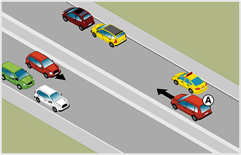
- 333. Köteles az ’A’ jelű gépkocsi a képen látható helyen az úttest jobb szélén várakozó járművek közé húzódni? #721535
- Nem.
- Igen.
- 334. Milyen irányú a forgalom olyan úton, amelyen három, egymástól elkülönített úttest van? #721546
- A középső úttesten kétirányú, a szélső úttesteken egyirányú forgalom van.
- Mindegyik úttesten egyirányú forgalom van.
- A középső úttesten egyirányú, a szélső úttesteken kétirányú forgalom van.
- 335. Köteles-e lassú járművével szorosan az úttest jobb szélén közlekedni? #721550
- Igen, ha az út- és forgalmi viszonyok ezt lehetővé teszik.
- Nem.
- Csak akkor, ha 20 km/h sebességnél lassabban halad.
- 336. Mit jelent a jobbratartási kötelezettség? #721552
- Lehetőség szerint az úttest jobb szélén kell közlekedni.
- Lehetőség szerint az úttest jobb oldalán bárhol lehet közlekedni.
- Lehetőség szerint a járdaszigettől 30 cm-re kell közlekedni.
- 337. Ön lassú járművet vezet 10 km/h sebességgel. Ha az úttest mellett lassító sáv van, köteles-e itt közlekedni, ha egyébként egyenesen kíván továbbhaladni? #721554
- Nem.
- Igen.
- 338. Melyi irányból szabad elhaladni az úttesten levő járdasziget mellett, ha az nem az úttest menetirány szerinti jobb és bal oldalát választja el egymástól és a járdaszigeten nem helyezték el a kikerülési irány jelzőtáblát sem? #721555
- Útiránytól függően jobbról és balról is.
- A jobbratartás miatt kizárólag csak jobbról.
- Minden esetben csak balról.
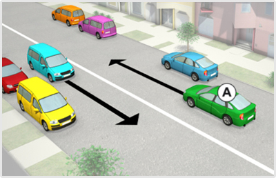
- 339. A képen látható járművek az úttest jobb szélén 15-20 méter távolságra várakoznak egymástól. Az ’A’ jelű gépkocsi szabályosan közlekedik, ha haladása közben nem húzódik le közéjük? #722226
- Igen.
- Nem, mert a jobbra tartásnak megfelelően mindig köteles az úttest jobb széléhez húzódva közlekedni.
- 340. Köteles az ’A’ jelű gépkocsi a képen látható helyen az úttest jobb szélén várakozó járművek közé húzódni? #722227
- Nem.
- Igen.
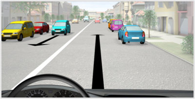
- 341. A képen látható járművek az úttest jobb szélén 15-20 méter távolságra várakoznak egymástól. Ön a kormánykerékkel jelzett járművet vezetve szabályosan közlekedik, ha haladása közben nem húzódik le közéjük? #722234
- Igen.
- Nem, mert a jobbra tartásnak megfelelően mindig köteles az úttest jobb széléhez húzódva közlekedni.
- 342. Ön a kormánykerékkel jelzett járművet vezetve köteles a képen látható helyen az úttest jobb szélén várakozó járművek közé húzódni? #722235
- Nem.
- Igen.
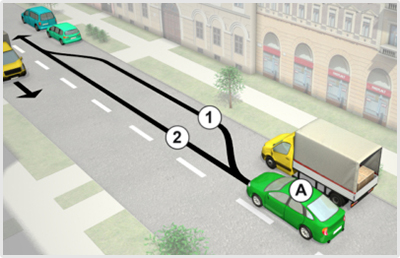
- 343. Ön az ’A’ jelű műszaki hibás járművével csak 20 km/h sebességgel tud közlekedni. Köteles-e az ’1’ jelű nyomvonalon haladni? #723284
- Igen.
- Nem.
- 344. A képen látható járművek az úttest szélén 15-20 méter távolságra várakoznak egymástól. Az ’A’ jelű személygépkocsi a megengedett legnagyobb sebességgel haladva szabályosan közlekedik a ’2’ jelű nyomvonalon? #723285
- Igen.
- Nem, mert a jobbra tartásnak megfelelően ilyen kis távolságban is köteles az úttest szélére húzódva közlekedni.
- Nem, mert minden esetben az ’1’ jelű nyomvonalon kell közlekednie.
- 345. Ön az ’A’ jelű személygépkocsival az útra engedélyezett 50 km/h sebességgel halad. Köteles-e a jobbratartás értelmében az ’1’ jelű nyomvonalon haladni? #723286
- Nem.
- Igen.
- 346. Köteles az ’A’ jelű személygépkocsi a képen látható helyen az útra engedélyezett maximális sebességgel közlekedve az ’1’ jelű nyomvonalon haladni? #723287
- Nem.
- Igen.
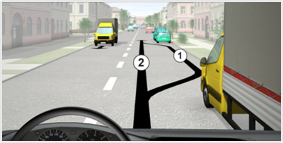
- 347. Ön a kormánykerékkel jelzett gépkocsit vezeti. A megengedett legnagyobb sebességgel haladva szabályosan közlekedik-e a '2' jelű nyomvonalon, ha a képen látható járművek az úttest szélén 15-20 méter távolságra várakoznak egymástól? #723290
- Igen.
- Nem, mert a jobbra tartásnak megfelelően ilyen kis távolságban is köteles az úttest szélére húzódva közlekedni.
- Nem, mert minden esetben az ’1’ jelű nyomvonalon kell közlekednie.
- 348. Ön a kormánykerékkel jelzett gépkocsit vezeti. A megengedett 50 km/h sebességgel haladva köteles-e a jobbratartás értelmében az ’1’ jelű nyomvonalon közlekedni? #723291
- Nem.
- Igen.
- 349. Ön a kormánykerékkel jelzett gépkocsit vezeti. Köteles-e a képen látható helyen az útra engedélyezett maximális sebességgel haladva az ’1’ jelű nyomvonalon közlekedni? #723292
- Nem.
- Igen.
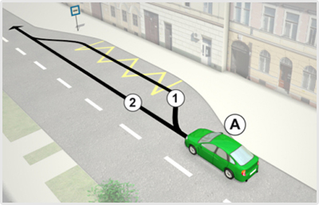
- 350. Köteles-e az ’A’ jelű személygépkocsi a jobbratartás értelmében az ábrán látható ’1’ jelű nyomvonalon haladni? #723295
- Nem.
- Igen.
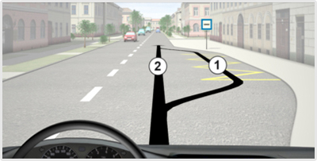
- 351. Ön a kormánykerékkel jelzett gépkocsit vezeti. Köteles-e a jobbratartás értelmében az ábrán látható ’1’ jelű nyomvonalon haladni? #723298
- Nem.
- Igen.
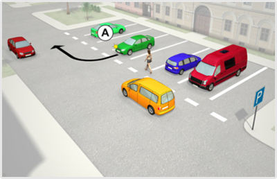
- 352. Az ’A’ jelű személygépkocsi a parkolóhelyről kíván elindulni. A tervezett manőver kapcsán van-e elsőbbségadási kötelezettsége? #723385
- Igen van.
- Nincs.
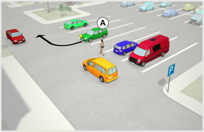
- 353. Az ’A’ jelű jármű a parkolóhelyről kíván elindulni. Eközben... #723500
- a gyalogos részére köteles elsőbbséget adni.
- feltarthatja a gyalogost.
- elsőbbséget fog kapni a gyalogostól.
- 354. Az ’A’ jelű személygépkocsi várakozóhelyről kíván elindulni. Mikor kell az irányjelzőt használnia? #723501
- Az elindulás megkezdése előtt, amit az úttestre kikanyarodásig működtetnie kell.
- Csak az elindulás után, mielőtt elkanyarodik a választott irányba.
- Itt csak akkor kell irányjelzést adnia, ha az úttesten másik jármű érkezik.
- 355. Az ’A’ jelű jármű a parkolóhelyről kíván elindulni. A tervezett manőver kapcsán van-e elsőbbségadási kötelezettsége? #723502
- Igen, van.
- Nincs.
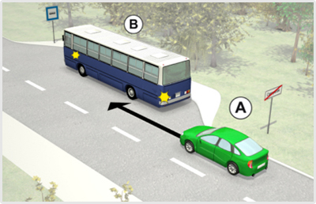
- 356. Az ’A’ jelű jármű vezetője köteles-e lehetővé tenni a ’B’ jelű autóbusz buszmegállóból történő elindulását? #723647
- Nem.
- Igen.
- Igen, de csak akkor, ha ez hirtelen fékezés nélkül megtehető.
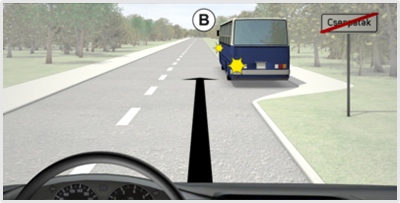
- 357. Ön a kormánykerékkel jelzett járművet vezeti. Köteles-e lehetővé tenni a ’B’ jelű autóbusz buszmegállóból történő elindulását? #723652
- Nem.
- Igen.
- Igen, de csak akkor, ha ez hirtelen fékezés nélkül megtehető.
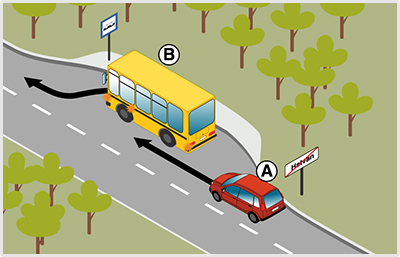
- 358. Lakott területen kívül az ’A’ jelű jármű vezetője a megállóból elinduló ’B’ jelű autóbusz elindulását... #723761
- nem köteles lehetővé tenni.
- köteles lehetővé tenni.
- 359. Ön az ’A’ jelű személygépkocsit az ábrázolt helyen vezeti. Van-e valamilyen kötelezettsége, ha azt látja, hogy a ’B’ jelű autóbusz el kíván indulni a megállóhelyről? #723762
- Nincs.
- Igen, lassítással, szükség esetén megállással is lehetővé kell tennie az autóbusz elindulását.
- Igen, intenzív fékezéssel lehetővé kell tennie az autóbusz elindulását.